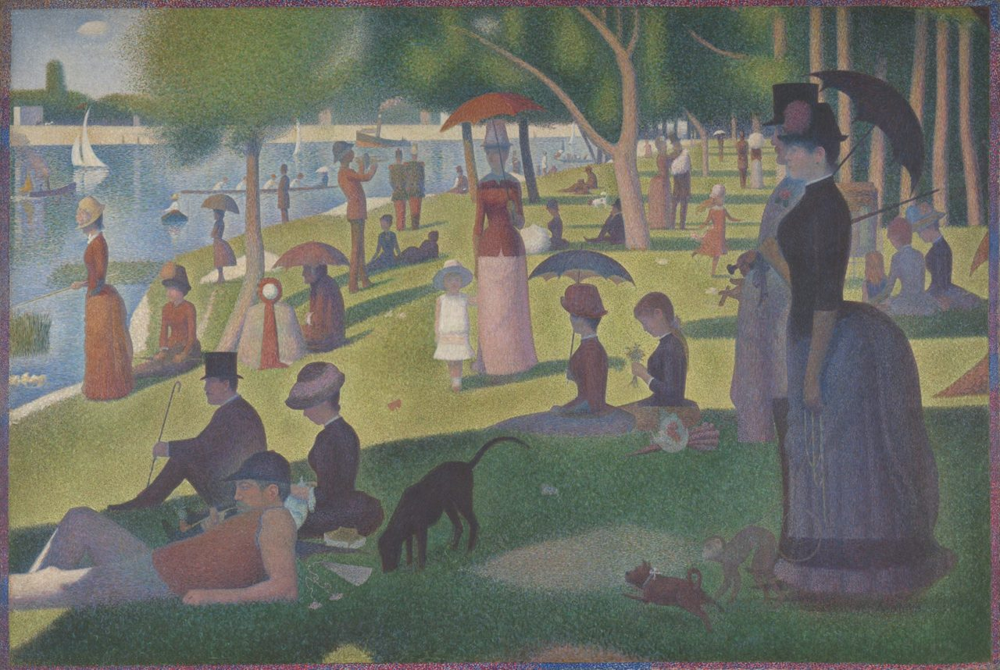

← 藝術101名畫背後的故事 EP08
大碗島的星期天下午
喬治・秀拉・1884–1886（畫框邊點描 1888–1889 加上）

這幅畫，是用無數個小點花兩年點出來的。
一個星期天的河邊
秀拉從1884年5月開始畫《大碗島的星期天下午》，畫的是巴黎塞納河上的大碗島。釣魚的女人、吹號的人、兩個士兵、穿白衣的小女孩，各種身分的巴黎人擠在同一片草地上。
讓顏色在你眼裡混合
他不在調色盤上混色，而是把一個個色點並排點在畫布上，讓觀眾站遠時自己在眼睛裡混合。1886年5月，這幅畫在第八屆、也是最後一屆印象派畫展首次展出。
後來才加的猴子
看畫面右下方，撐黑傘的貴婦牽著一隻猴子。芝加哥藝術博物館說，這隻猴子是秀拉後來回頭修改時才加上的。1888到1889年，他又在畫布邊緣補了一圈彩色點點當邊框。
下次看到它，先看這裡
牽著的猴子 撐黑傘貴婦腳邊，用皮繩牽著一隻猴子
河邊釣魚的女人 左側河岸邊，穿橘紅衣裙的女人在釣魚
白衣小女孩 畫面正中央，唯一正面看向觀眾的人
作品資料
喬治・秀拉（Georges Seurat）
《大碗島的星期天下午》A Sunday on La Grande Jatte — 1884，1884–1886（畫框邊點描 1888–1889 加上）
油彩、畫布 207.5 × 308.1 cm
芝加哥藝術博物館（Art Institute of Chicago）
《大碗島的星期天下午》A Sunday on La Grande Jatte — 1884，1884–1886（畫框邊點描 1888–1889 加上）
油彩、畫布 207.5 × 308.1 cm
芝加哥藝術博物館（Art Institute of Chicago）